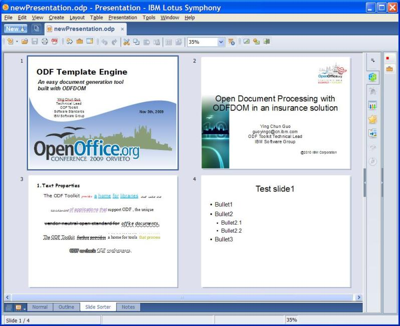

If you make a lot of presentations in your daily work, you know that you don't always create a presentation from scratch.
Assembling several different presentations together to make a new presentation, e.g. copying several pages from presentation A
and copying another several pages from presentation B, is a common activity for the presentation author.
This demo provides a Java application that can assemble specific pages of presentations together and make one presentation from the command line.
Here is an example. I want to make a presentation with the first page from presentation A,
the first page from presentation B and the first page from presentation C. I can call the following command:
Java PresentationAssembler -in PresentationA.odp(1) -in PresentationB.odp(1) -in PresentationC.odp(1-2) -out newPresentation.odp
A new presentation will be generated which is showed in the following picture. You can see, the pictures, the styles and master pages are copied also.

In the next section, I will show how easy it is to create this assembling application using the Simple API.
assemble is the method that accepts the command line parameters, analyzes them, and assembles presentations
with the Simple Java API for ODF. In this method, a new presentation is created, and then, pages from other presentation
documents are attached while the command line is being analyzed. Simple Java API for ODF provides very simple methods to
copy pages from other presentations:
PresentationDocument.copyForeignSlide(int destIndex, PresentationDocument srcDoc, int srcIndex)
and
PresentationDocument.appendPresentation(PresentationDocument srcDoc).
After the slides are attached, the first slide of the new presentation is deleted by invoking method
PresentationDocument.deleteSlideByIndex(int index).
This is because the first slide is an empty slide which was created when the new presentation was created with
method PresentationDocument.newPresentationDocument()
Below is the source code of method assemble. Most of the code is used to analyze the command line
parameters. Only a few statements are used to attach slides to the new presentation. So you can see how powerful
functions Simple Java API for ODF provides.
public void assemble(String[] args) throws Exception
{
String outputFileName="default.odp";
int pageIndex = 1;
PresentationDocument doc = PresentationDocument.newPresentationDocument();
int i=0;
while (i < args.length)
{
String param = args[i];
if (param.equals("-out")) //get the output file name
outputFileName = args[++i];
else if (param.equals("-in")) //get the input file name
{
String pageDesc = args[++i];
String filename = pageDesc, pagelist;
int indexStart = pageDesc.indexOf('('); //get the page numbers
int[] srcPages = null;
if (indexStart > -1)
{
filename = pageDesc.substring(0, indexStart);
pagelist = pageDesc.substring(indexStart+1, pageDesc.length()-1);
srcPages = getPageNumbers(pagelist); //analysis the page number description
//and return all page numbers that need to be copied
}
PresentationDocument sourceDoc = PresentationDocument.loadDocument(new File(filename));
if (srcPages==null)
{
doc.appendPresentation(sourceDoc);
pageIndex += sourceDoc.getSlideCount();
} else for(int j=0;j < srcPages.length;j++)
{
doc.copyForeignSlide(pageIndex, sourceDoc, srcPages[j]);
pageIndex++;
}
}
i++;
}
doc.deleteSlideByIndex(0);
doc.save(outputFileName);
doc.close();
}
 0.4.5
0.4.5